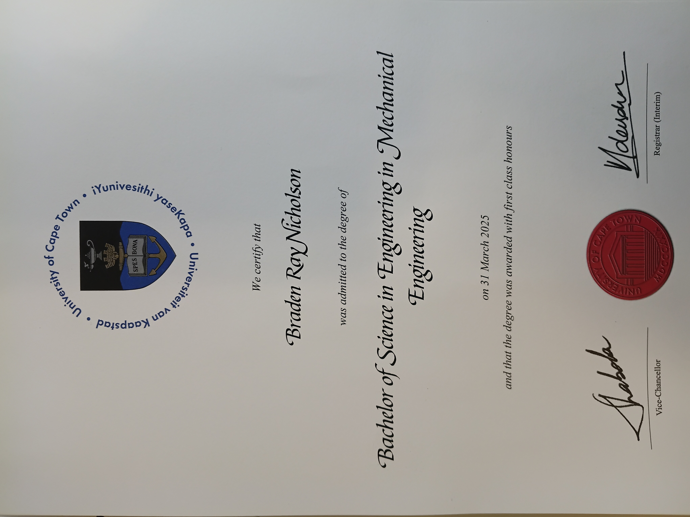

Education
-

MScEng, Mechanical Engineering (in progress)
University of Cape Town
Jan 2025 – Present
-
BScEng, Mechanical Engineering
University of Cape Town
Jan 2023 – Dec 2024
-
Study abroad program
University of Cape Town
2022
-
B.S., Mechanical Engineering (partial)
Northern Illinois University
Aug 2019 – Dec 2021
MScEng in Mechanical Engineering (in progress)
with the Centre for Materials Engineering at the University of Cape Town
Jan 2025 – present
%20staff%20choice%202024.png)
My Masters degree is being completed at the Centre for Materials Engineering, part of the Department of Mechanical Engineering at the University of Cape Town. The laboratory is dedicated to materials research, with focuses on additive manufacturing, novel alloys, sustainable 3D-printed polymers, and composites. My advisor is Thorsten Becker, an established researcher in fields such as fracture mechanics, digital image correlation, and metal additive manufacturing.
BScEng in Mechanical Engineering
at the University of Cape Town
Jan 2023 – Dec 2024
The University of Cape Town is consistently ranked as the top university on the continent of Africa and between 100 and 200 in the world. Upon arriving at UCT I found that it held its students to an incredibly high academic standard and that its grading system was very different to the one back home. Everything was graded as a percentage (0-100), and assignments were graded harshly—above 75% is considered the equivalent of an A. My time at UCT began with a semester study abroad program in spring 2022, which then turned into another study abroad program in the fall, and finally led me to transfer as a full-time UCT student in 2023. This meant my degree would take longer than the typical four years, but I was alright with that since the experience was so valuable to me.
I ended up graduating with a 78.54/100 GPA, considered a 'first-class distinction', and I won the 2024 SAIMechE award for the best final year dissertation project in my entire class. I remain convinced that my development as an engineer would not have been as significant had I not decided to move to UCT.



B.S. in Mechanical Engineering (partial)
at Northern Illinois University
Aug 2019 – Dec 2021
Before UCT, my years at NIU were also valuable. I was involved in both academics and extracurriculars, playing rugby for the NIU men's rugby football club where I became President of the board for the 2020-2021 year, and being an active participant in campus ministry. Due to the pandemic, during fall 2020 and spring 2021 I took a reduced course load because I felt I did not learn as well from online classes as I did in person.